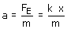
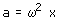
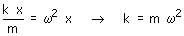

| Combinación de Cinemática y Dinámica para un m.a.s Un cuerpo que oscila armónicamente está sometido a una fuerza recuperadora cuyo módulo es proporcional a la separación de la posición de equilibrio. De acuerdo con la Dinámica el módulo de su aceleración valdrá:  Por otra parte, de acuerdo con la Cinemática, el módulo de la aceleración de un cuerpo que oscila armónicamente vale:  Igualando ambos módulos resulta:  |